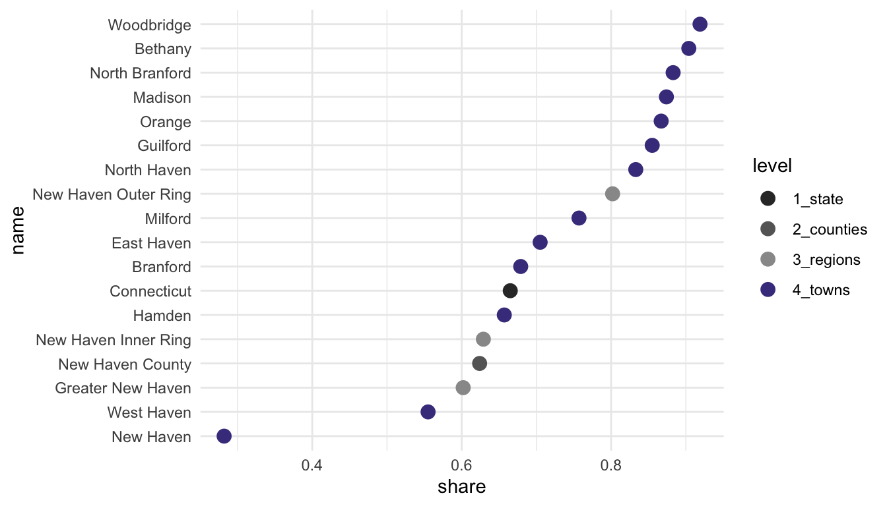
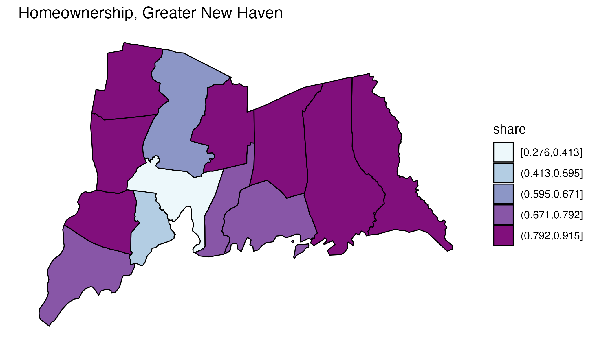
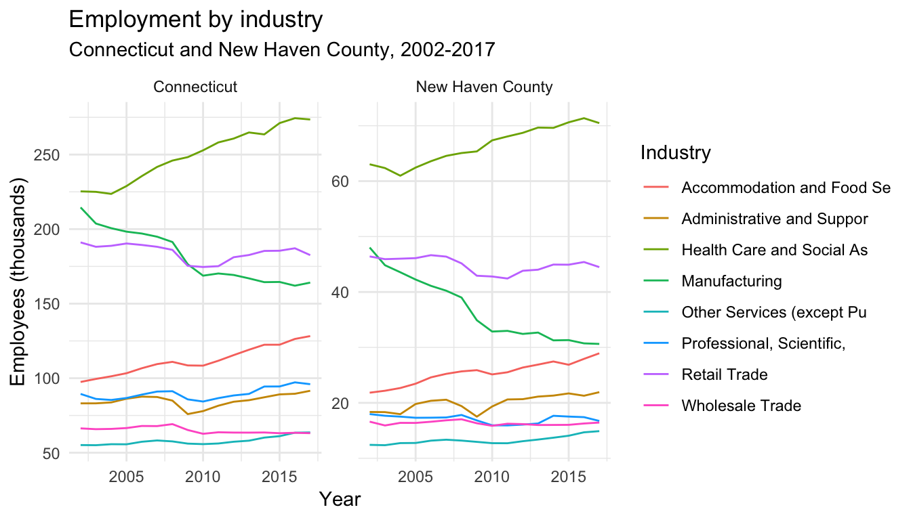
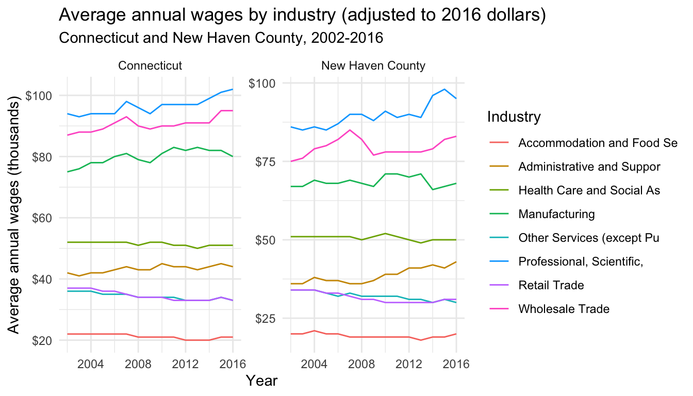
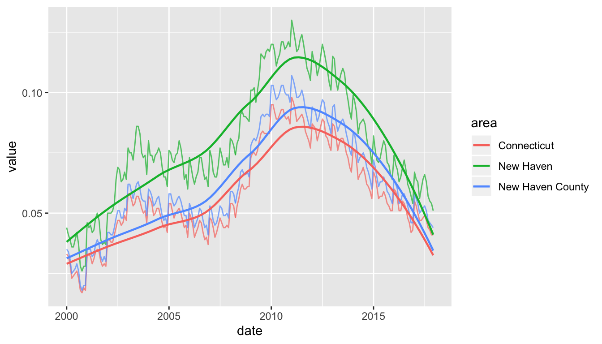

The tables I’m working with are B01003, total population; B03002, race and Latino ethnicity; and B25003, housing tenure. It’s easiest to save these in a named list, then map over the list calling multi_geo_acs() for each table number.
I’m pulling out the entries in the cwi dataset cwi::regions (a list) to only include the Greater New Haven-area ones. Then I fetch the ACS tables, and filter them to only have geographic levels other than town, or to only be towns in Greater New Haven.
gnh_regions <- regions[c("Greater New Haven", "New Haven Inner Ring", "New Haven Outer Ring")]
gnh_data <- table_nums %>%
map(~multi_geo_acs(table = .,
year = year,
towns = "all",
regions = gnh_regions,
counties = "New Haven",
state = "09")) %>%
map(~filter(., NAME %in% gnh_regions$`Greater New Haven` | level != "4_towns"))
#> Table B01003: TOTAL POPULATION
#> Geographies included:
#> Towns: all
#> Regions: Greater New Haven, New Haven Inner Ring, New Haven Outer Ring
#> Counties: New Haven County
#> State: 09
#> Table B03002: HISPANIC OR LATINO ORIGIN BY RACE
#> Geographies included:
#> Towns: all
#> Regions: Greater New Haven, New Haven Inner Ring, New Haven Outer Ring
#> Counties: New Haven County
#> State: 09
#> Table B25003: TENURE
#> Geographies included:
#> Towns: all
#> Regions: Greater New Haven, New Haven Inner Ring, New Haven Outer Ring
#> Counties: New Haven County
#> State: 09gnh_data$total_pop
#> # A tibble: 18 x 9
#> GEOID NAME variable estimate moe level state county year
#> <chr> <chr> <chr> <dbl> <dbl> <fct> <chr> <chr> <dbl>
#> 1 09 Connectic… B01003_0… 3588570 NA 1_sta… <NA> <NA> 2016
#> 2 09009 New Haven… B01003_0… 860874 NA 2_cou… 09 <NA> 2016
#> 3 <NA> Greater N… B01003_0… 464596 132 3_reg… <NA> <NA> 2016
#> 4 <NA> New Haven… B01003_0… 145463 57 3_reg… <NA> <NA> 2016
#> 5 <NA> New Haven… B01003_0… 188728 103 3_reg… <NA> <NA> 2016
#> 6 090090… Bethany B01003_0… 5521 24 4_tow… 09 New Have… 2016
#> 7 090090… Branford B01003_0… 28084 28 4_tow… 09 New Have… 2016
#> 8 090092… East Haven B01003_0… 29015 24 4_tow… 09 New Have… 2016
#> 9 090093… Guilford B01003_0… 22382 31 4_tow… 09 New Have… 2016
#> 10 090093… Hamden B01003_0… 61476 31 4_tow… 09 New Have… 2016
#> 11 090094… Madison B01003_0… 18247 21 4_tow… 09 New Have… 2016
#> 12 090094… Milford B01003_0… 53430 46 4_tow… 09 New Have… 2016
#> 13 090095… New Haven B01003_0… 130405 60 4_tow… 09 New Have… 2016
#> 14 090095… North Bra… B01003_0… 14310 23 4_tow… 09 New Have… 2016
#> 15 090095… North Hav… B01003_0… 23888 59 4_tow… 09 New Have… 2016
#> 16 090095… Orange B01003_0… 13941 24 4_tow… 09 New Have… 2016
#> 17 090098… West Haven B01003_0… 54972 42 4_tow… 09 New Have… 2016
#> 18 090098… Woodbridge B01003_0… 8925 33 4_tow… 09 New Have… 2016The total population data is very straightforward, as it only has one variable, B01003_001. The tibble returned has the GEOID, except for custom geographies like regions; the name of each geography, including the names of each region; the variable codes; estimates; margins of error at the default 90% confidence level; the geographic level, numbered in order of decreasing size; and the counties of the towns.
The race and ethnicity table will require some calculations, using the brilliantly-titled camiller package:
label_acs(), join the race tibble with the cwi::acs_vars dataset to get variable labels. Oftentimes, these labels need to be separated by their "!!" delimeter.camiller::add_grps() with a list of racial groups and their labels’ positions in the label column. This gives estimates and, optionally, margins of error for aggregatescamiller::calc_shares() then gives shares of each group’s estimate over the "total" denominator.gnh_data$race %>%
label_acs() %>%
group_by(level, county, NAME) %>%
add_grps(list(total = 1, white = 3, black = 4, latino = 12, other = 5:9), group = label) %>%
calc_shares(group = label, denom = "total")
#> # A tibble: 90 x 6
#> # Groups: level, county, NAME [18]
#> level county NAME label estimate share
#> <fct> <chr> <chr> <fct> <dbl> <dbl>
#> 1 1_state <NA> Connecticut total 3588570 NA
#> 2 1_state <NA> Connecticut white 2464450 0.687
#> 3 1_state <NA> Connecticut black 347674 0.097
#> 4 1_state <NA> Connecticut latino 537728 0.15
#> 5 1_state <NA> Connecticut other 238718 0.067
#> 6 2_counties <NA> New Haven County total 860874 NA
#> 7 2_counties <NA> New Haven County white 557698 0.648
#> 8 2_counties <NA> New Haven County black 104831 0.122
#> 9 2_counties <NA> New Haven County latino 144549 0.168
#> 10 2_counties <NA> New Haven County other 53796 0.062
#> # … with 80 more rowsWith the tenure table, it’s easiest to separate the labels by "!!". Here the table can be wrangled into shares of households that are owner-occupied.
homeownership <- gnh_data$tenure %>%
label_acs() %>%
separate(label, into = c("total", "tenure"), sep = "!!", fill = "left") %>%
select(level, name = NAME, tenure, estimate) %>%
filter(tenure != "Renter occupied") %>%
group_by(level, name) %>%
calc_shares(group = tenure, denom = "Total") %>%
filter(!is.na(share))
homeownership
#> # A tibble: 18 x 5
#> # Groups: level, name [18]
#> level name tenure estimate share
#> <fct> <chr> <fct> <dbl> <dbl>
#> 1 1_state Connecticut Owner occupied 900223 0.665
#> 2 2_counties New Haven County Owner occupied 203568 0.624
#> 3 3_regions Greater New Haven Owner occupied 106876 0.602
#> 4 3_regions New Haven Inner Ring Owner occupied 34337 0.629
#> 5 3_regions New Haven Outer Ring Owner occupied 58447 0.802
#> 6 4_towns Bethany Owner occupied 1807 0.904
#> 7 4_towns Branford Owner occupied 8331 0.679
#> 8 4_towns East Haven Owner occupied 7919 0.705
#> 9 4_towns Guilford Owner occupied 7314 0.855
#> 10 4_towns Hamden Owner occupied 15335 0.657
#> 11 4_towns Madison Owner occupied 5932 0.874
#> 12 4_towns Milford Owner occupied 16314 0.757
#> 13 4_towns New Haven Owner occupied 14092 0.282
#> 14 4_towns North Branford Owner occupied 4818 0.883
#> 15 4_towns North Haven Owner occupied 6969 0.833
#> 16 4_towns Orange Owner occupied 4267 0.867
#> 17 4_towns West Haven Owner occupied 11083 0.555
#> 18 4_towns Woodbridge Owner occupied 2695 0.919geo_level_plot() gives a quick visual overview of the homeownership rates, highlighting town-level values.

acs_quick_map() gives a quick map sketch of the rates. This function uses the Jenks algorithm for making breaks with classInt::classIntervals. This algorithm is well suited for visually displaying larger inequalities, but the number of breaks you give it won’t necessarily be the number of breaks returned. Here I supply n = 6, but the algorithm found instead that n = 5 was the nearest n that could be used. This function lets us see whether there’s a geographic distribution of this data with minimal work.
tenure_map <- homeownership %>%
filter(level == "4_towns") %>%
acs_quick_map(value = share, level = "town", color = "black", size = 0.4,
title = "Homeownership, Greater New Haven", palette = "BuPu")
tenure_map
Since this returns a ggplot object with sf data, we can add additional ggplot functions, such as labeling, themes, or additional scales or geoms.
tenure_map +
labs(subtitle = "By town, 2016") +
geom_sf(data = . %>% filter(name == "New Haven"), fill = NA, color = "black", size = 1.5) +
coord_sf(ndiscr = F)
Say as part of a pipeline, you need to do some calculations, write different sections of a data frame to CSV files to pass along to a colleague or refer to later, and then continue on to some more calculations. batch_csv_dump() takes either a list of data frames or a data frame plus a column to split by, and writes out a set of CSV files, then lets you move along to the next step in your pipeline.
For example, I need to pull a table of populations by age group for several regions of Connecticut. I don’t need to split populations by gender, so I’ll add up male and female populations for each age group. I don’t actually need to more detailed age groups now, but I need to stash them in files for later, so I’ll aggregate, write a bunch of files, and then aggregate into broader age groups that I need for my current work.
new_haven_regions <- regions[c("Greater New Haven", "New Haven Inner Ring",
"New Haven Outer Ring", "Lower Naugatuck Valley", "Greater Waterbury")]
acs <- multi_geo_acs(table = "B01001", year = 2016, towns = NULL, regions = new_haven_regions,
counties = c("New Haven County", "Fairfield County")) %>%
label_acs() %>%
separate(label, into = c("total", "sex", "age"), sep = "!!") %>%
filter(!is.na(age)) %>%
mutate(age = as.factor(age) %>% forcats::fct_inorder()) %>%
group_by(NAME, level, age) %>%
summarise(estimate = sum(estimate), moe = tidycensus::moe_sum(moe, estimate) %>% round()) %>%
ungroup()
acs %>%
split(.$NAME) %>%
batch_csv_dump(base_name = "pop_by_age", bind = TRUE, verbose = TRUE) %>%
group_by(level, NAME) %>%
camiller::add_grps(list(ages0_4 = 1, ages5_17 = 2:4, ages0_17 = 1:4, ages18_24 = 5:8, ages0_24 = 1:8), group = age, estimate = estimate, moe = moe) %>%
arrange(level, NAME, age)I’m also interested in learning about employment by industry over the past several years. qwi_industry() fetches county-level data by industry over time, either quarterly or annually. Here I’ll look at annual averages of all industries for New Haven County and Connecticut over the past 16 years. I’m filtering out the industry code “00”, which is the counts for all industries.
nhc_employment <- qwi_industry(2002:2017, counties = "009", annual = T) %>%
mutate(location = "New Haven County")
#> The API can only get 10 years of data at once; making multiple calls, but this might take a little longer.
ct_employment <- qwi_industry(2002:2017, annual = T) %>%
mutate(location = "Connecticut")
#> The API can only get 10 years of data at once; making multiple calls, but this might take a little longer.
employment <- bind_rows(nhc_employment, ct_employment) %>%
filter(industry != "00") %>%
inner_join(naics_codes %>% select(-ind_level), by = "industry")
employment
#> # A tibble: 640 x 8
#> year industry state county Emp Payroll location label
#> <dbl> <chr> <chr> <chr> <dbl> <dbl> <chr> <chr>
#> 1 2002 11 09 009 700 1.65e7 New Haven … Agriculture, For…
#> 2 2002 21 09 009 202 1.09e7 New Haven … Mining, Quarryin…
#> 3 2002 22 09 009 1714 1.09e8 New Haven … Utilities
#> 4 2002 23 09 009 15582 7.63e8 New Haven … Construction
#> 5 2002 31-33 09 009 47159 2.38e9 New Haven … Manufacturing
#> 6 2002 42 09 009 16643 9.31e8 New Haven … Wholesale Trade
#> 7 2002 44-45 09 009 46316 1.19e9 New Haven … Retail Trade
#> 8 2002 48-49 09 009 7705 2.58e8 New Haven … Transportation a…
#> 9 2002 51 09 009 14458 7.58e8 New Haven … Information
#> 10 2002 52 09 009 13470 7.94e8 New Haven … Finance and Insu…
#> # … with 630 more rowsNext, say I want to look at the industries that were largest in New Haven county in 2017, and see how those have changed both for the county and statewide over this time period. I’ll filter employment, get the industries with the largest numbers of employees, then filter employment for just those industries and plot it.
top2017 <- employment %>%
filter(year == 2017, county == "009") %>%
top_n(8, Emp) %>%
pull(industry)
top2017
#> [1] "31-33" "42" "44-45" "54" "56" "62" "72" "81"
employment %>%
filter(industry %in% top2017) %>%
mutate(label = stringr::str_sub(label, 1, 25)) %>%
mutate(Emp = Emp / 1000) %>%
ggplot(aes(x = year, y = Emp, color = label)) +
geom_line() +
labs(x = "Year", y = "Employees (thousands)", title = "Employment by industry",
subtitle = "Connecticut and New Haven County, 2002-2017", color = "Industry") +
theme_minimal() +
facet_wrap(~ location, scales = "free_y")
If I’m interested in changes in wages over this period, I can use the adj_inflation() function. This takes a data frame, the name of the column containing dollar amounts, and a base year, then adds two columns for the inflation adjustment factor and the adjusted value. The BLS hasn’t yet released a full year of data for 2017, so I’m filtering to remove 2017 and adjusting for inflation by 2016 dollars.
employment %>%
filter(industry %in% top2017) %>%
filter(year < 2017) %>%
mutate(label = stringr::str_sub(label, 1, 25)) %>%
mutate(avg_wage = Payroll / Emp) %>%
adj_inflation(value = avg_wage, base_year = 2016, year = year) %>%
mutate(adj_wage_1k = round(adj_avg_wage / 1000)) %>%
ggplot(aes(x = year, y = adj_wage_1k, color = label)) +
geom_line() +
scale_y_continuous(labels = scales::dollar) +
labs(x = "Year", y = "Average annual wages (thousands)", title = "Average annual wages by industry (adjusted to 2016 dollars)",
subtitle = "Connecticut and New Haven County, 2002-2016", color = "Industry") +
theme_minimal() +
facet_wrap(~ location, scales = "free_y")
#> REQUEST_SUCCEEDED
Now we have a visual that shows that in a few industries, wages have climbed over the past several years, but in many industries, wages haven’t increased except by inflation.
To look at unemployment rates over time, I can use laus_trend(). The LAUS covers smaller geographies than the QWI, so laus_trend() is set up to find data by a combination of state, counties, or towns. The LAUS API returns monthly data on labor force counts, employment counts, unemployed counts, and unemployment rate; laus_trend() lets you specify which of these measures to fetch.
unemployment <- laus_trend(c("New Haven", "New Haven County", "Connecticut"), startyear = 2000, endyear = 2017, measures = "unemployment rate") %>%
mutate(date = paste(year, periodName, "01", sep = "-") %>% lubridate::ymd()) %>%
mutate(value = value / 100) %>%
select(area, date, value)
#> REQUEST_SUCCEEDED
unemployment
#> # A tibble: 648 x 3
#> area date value
#> <chr> <date> <dbl>
#> 1 Connecticut 2017-12-01 0.0410
#> 2 Connecticut 2017-11-01 0.0410
#> 3 Connecticut 2017-10-01 0.043
#> 4 Connecticut 2017-09-01 0.044
#> 5 Connecticut 2017-08-01 0.047
#> 6 Connecticut 2017-07-01 0.049
#> 7 Connecticut 2017-06-01 0.048
#> 8 Connecticut 2017-05-01 0.047
#> 9 Connecticut 2017-04-01 0.047
#> 10 Connecticut 2017-03-01 0.05
#> # … with 638 more rowsggplot(unemployment, aes(x = date, y = value, group = area, color = area)) +
geom_line(alpha = 0.7) +
geom_smooth(se = F, method = "loess", size = 0.8)